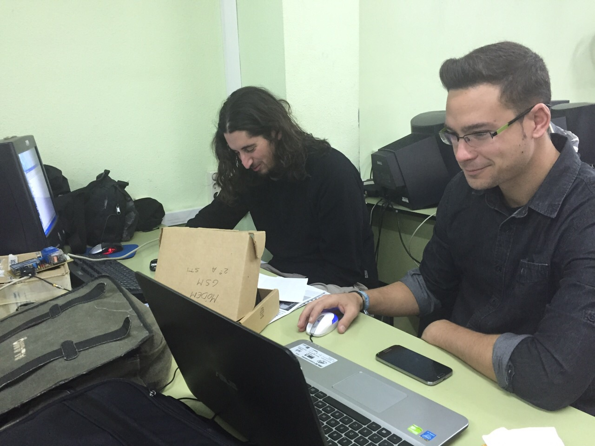
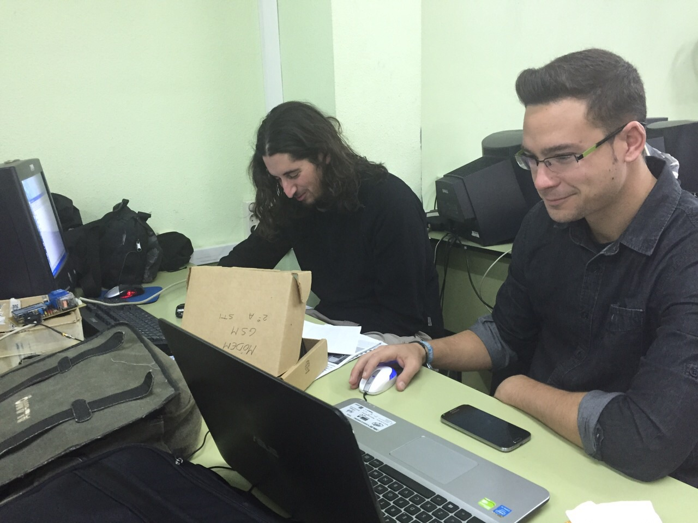

Hogar Digital
2º STI
IES Benjamin Rua


 



El modem GSM utilizado es de la marca Domótica Viva, en concreto el modelo Domobile versión 1.1. Entre las muchas aplicaciones de control, como calefacción, sensores, o diferentes dispositivos integrados en el hogar digital, hemos decidido controlar una electro-válvula para activar el riego del jardín. Además dispondrá de dos sensores que nos avisarán mediante mensaje al móvil del nivel de humedad en el jardín y el nivel del depósito de agua para el riego. Tras la inspección inicial y la lectura del manual de usuario proporcionado por el fabricante, hemos procedido a la puesta en marcha y posterior configuración del dispositivo.
Comenzamos con su puesta en marcha insertando una tarjeta SIM en el dispositivo, (esta tarjeta debe estar sin número pin de bloqueo inicial) conectamos la antena y alimentamos conectando a la red eléctrica mediante el adaptador de corriente suministrado. Comprobamos que el dispositivo funciona correctamente y se ha conectado a la red GSM tal y como indican los led que integra el modem. Procedemos a configurar el dispositivo mediante SMS: